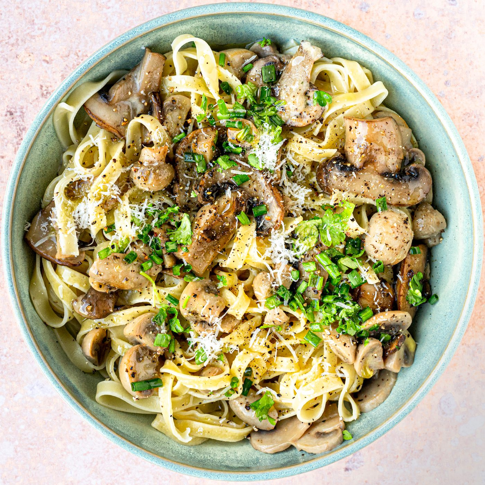

Romige tagliatelli met champignons
Home

Description
De voorbije maandagen deelde ik met jullie een heel makkelijk recept van pasta met saus op basis van één groente (we hebben al broccoli, prei en bloemkool gehad). Vandaag heb ik speciaal voor makkelijke maandag een nieuw recept bereid van pasta weer met saus op basis van één groente, namelijk champignons. Het is alweer een supersnel, supersimpel en heel lekker recept geworden.
Ingredients
- 400 g tagliatelli
- 250 ml groentebouillon
- 200 ml volle room
- 2 takjes tijm
- klein klontje boter
- 750 g champignons
- Parmezaanse kaas
- verse groene kruiden
- verse gemalen peper
- zout
Stappen
- Wrijf de champignons schoon en snijd ze in schijfjes. Verhit een ruime pan en smelt er een klein klontje boter in. Bak de champignons op een hoog vuur. De champignons zullen tijdens het bakken slinken en wat vocht afgeven, houd de pan warm genoeg zodat dat vocht grotendeels verdampt.
- Voeg nu de groentenbouillon, de room en de takjes tijm toe aan de pan en zet het vuur lager zodat de saus pruttelt. Laat de saus op een zacht vuur staan pruttelen totdat ze ingedikt is tot de gewenste dikte. Dat zal ongeveer 10 minuten duren.
- Kook ondertussen de tagliatelle al dente in een ruime pot met licht gezouten water en giet ze af.
- Kruid de romige champignonsaus naar smaak bij met vers gemalen peper en zout.
- Meng de tagliatelle met de roomsaus, en dien onmiddellijk op in diepe borden. Werk elk bord af met een beetje geraspte parmezaanse kaas, wat gesnipperde groene kruiden, en een scheutje goede olijfolie.